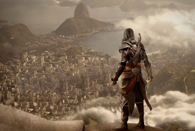

Assassins Creed III | Veja Desmond no Brasil
Em Assassin's Creed III, o personagem Desmond precisa viajar ao Brasil para descobrir um estádio, que tem uma fonte de poder antigo. Veja o personagem no metrô e a dublagem, que passa por frases como "Aquele cara tá matando todo mundo". Claro, há spoilers no vídeo:

O jogo começará no final do século 18 e acompanha Ratohnakéton, filho de um inglês e uma nativa americana. Rebatizado como Connor, ele torna-se a nova voz da justiça na longeva guerra entre assassinos e templários e a luta pela liberdade e contra a tirania.